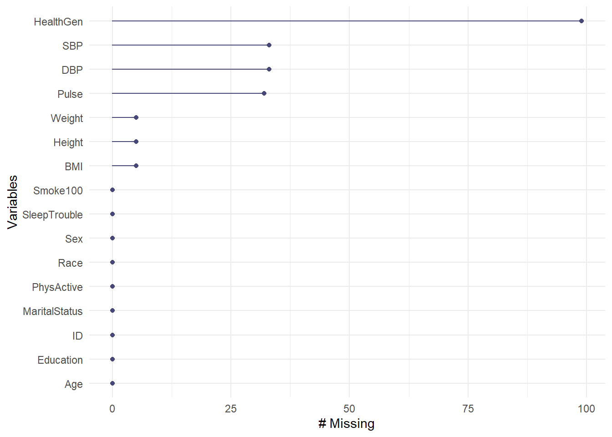

knitr::opts_chunk$set(comment = NA)
library(NHANES)
library(janitor)
library(naniar)
library(tidyverse)
theme_set(theme_bw())4 Data Structures, Variable Types & Sampling NHANES
4.1 Setup: Packages Used Here
4.2 Data require structure and context
Descriptive statistics are concerned with the presentation, organization and summary of data, as suggested in Norman and Streiner (2014). This includes various methods of organizing and graphing data to get an idea of what those data can tell us.
As Vittinghoff et al. (2012) suggest, the nature of the measurement determines how best to describe it statistically, and the main distinction is between numerical and categorical variables. Even this is a little tricky - plenty of data can have values that look like numerical values, but are just numerals serving as labels.
As Bock, Velleman, and De Veaux (2004) point out, the truly critical notion, of course, is that data values, no matter what kind, are useless without their contexts. The Five W’s (Who, What [and in what units], When, Where, Why, and often How) are just as useful for establishing the context of data as they are in journalism. If you can’t answer Who and What, in particular, you don’t have any useful information.
In general, each row of a data frame corresponds to an individual (respondent, experimental unit, record, or observation) about whom some characteristics are gathered in columns (and these characteristics may be called variables, factors or data elements.) Every column / variable should have a name that indicates what it is measuring, and every row / observation should have a name that indicates who is being measured.
4.3 Sampling Adults in NHANES
In Chapter 3, we spent some time with a sample from the National Health and Nutrition Examination. Now, by changing the value of the set.seed function which determines the starting place for the random sampling, and changing some other specifications, we’ll generate a new sample describing 750 unique (distinct) adult subjects who completed the 2011-12 version of the survey when they were between the ages of 21 and 64.
4.3.1 Creating a Temporary, Cleaner Data Frame
I’ll start by describing the plan we will use to create a new data frame called nh_temp from which we will eventually build our final sample. In particular, let me lay out the steps I will use to create the nh_temp frame from the original NHANES data frame available in the R package called NHANES.
We’ll filter the original NHANES data frame to include only the responses from the 2011-12 administration of the survey. This will cut the sample in half, from 10,000 rows to 5,000.
We’ll then filter again to restrict the sample to adults whose age is at least 21 and also less than 65. I’ll do this because I want to avoid problems with including both children and adults in my sample, and because I also want to focus on the population of people in the US who are usually covered by private insurance from their job, or by Medicaid insurance from the government, rather than those covered by Medicare.
As we discussed previously, what is listed in the NHANES data frame as
Gendershould be more correctly referred to asSex.Sexis a biological feature of an individual, whileGenderis a social construct. This is an important distinction, so I’ll change the name of the variable.We’ll also rename three other variables, specifically we’ll use
Raceto describe theRace3variable in the original NHANES data frame, as well asSBPto refer to the average systolic blood pressure, which is specified asBPSysAve, andDBPto refer to the average diastolic blood pressure, which is specified asBPDiaAve.Having accomplished the previous four steps, we’ll then select the variables we want to keep in the sample. (We use select for choosing variables or columns in the data frame, and filter for selecting subjects or rows.) The sixteen variables we will select are: ID, Sex, Age, Height, Weight, Race, Education, BMI, SBP, DBP, Pulse, PhysActive, Smoke100, SleepTrouble, MaritalStatus and HealthGen.
The original NHANES data frame includes some subjects (rows) multiple times in an effort to incorporate some of the sampling weights used in most NHANES analyses. For our purposes, though, we’d like to only include each subject one time. We use the
distinct()function to limit the data frame to completely unique subjects (so that, for example, we don’t wind up with two or more rows that have the same ID number.)
Here is the code I used to complete the six steps listed above and create the nh_temp data frame.
nh_temp <- NHANES |>
filter(SurveyYr == "2011_12") |>
filter(Age >= 21 & Age < 65) |>
rename(Sex = Gender, Race = Race3, SBP = BPSysAve, DBP = BPDiaAve) |>
select(ID, Sex, Age, Height, Weight, Race, Education, BMI, SBP, DBP,
Pulse, PhysActive, Smoke100, SleepTrouble,
MaritalStatus, HealthGen) |>
distinct()The resulting nh_temp data frame has 1700 rows and 16 columns.
nh_temp# A tibble: 1,700 × 16
ID Sex Age Height Weight Race Educa…¹ BMI SBP DBP Pulse PhysA…²
<int> <fct> <int> <dbl> <dbl> <fct> <fct> <dbl> <int> <int> <int> <fct>
1 62172 fema… 43 172 98.6 Black High S… 33.3 103 72 80 No
2 62176 fema… 34 172. 68.7 White Colleg… 23.3 107 69 92 Yes
3 62180 male 35 179. 89 White Colleg… 27.9 107 66 66 No
4 62199 male 57 186 96.9 White Colleg… 28 110 65 84 Yes
5 62205 male 28 171. 84.8 White Colleg… 28.9 122 87 70 Yes
6 62206 fema… 35 167. 81.5 White Some C… 29.1 106 50 58 No
7 62208 male 38 169. 63.2 Hisp… Some C… 22.2 105 59 52 Yes
8 62209 fema… 62 143. 53.5 Mexi… 8th Gr… 26 108 57 72 No
9 62220 fema… 31 167. 113. Black Colleg… 40.4 120 71 62 Yes
10 62222 male 32 179 80.1 White Colleg… 25 104 73 78 No
# … with 1,690 more rows, 4 more variables: Smoke100 <fct>, SleepTrouble <fct>,
# MaritalStatus <fct>, HealthGen <fct>, and abbreviated variable names
# ¹Education, ²PhysActive
# ℹ Use `print(n = ...)` to see more rows, and `colnames()` to see all variable names4.3.2 Sampling nh_temp to obtain our nh_adult750 sample
Having established the nh_temp sampling frame, we now select a random sample of 750 adults from the 1700 available responses.
- We will use the
set.seed()function in R to set a random numerical seed to ensure that if you redo this work, you will obtain the same sample.- Setting a seed is an important part of being able to replicate the work later when sampling is involved.
- Then we will use the
slice_sample()function to actually draw the random sample, without replacement.- “Without replacement” means that once we’ve selected a particular subject, we won’t select them again.
set.seed(431002)
# use set.seed to ensure that we all get the same random sample
nh_adult750 <- slice_sample(nh_temp, n = 750, replace = F)
nh_adult750# A tibble: 750 × 16
ID Sex Age Height Weight Race Educa…¹ BMI SBP DBP Pulse PhysA…²
<int> <fct> <int> <dbl> <dbl> <fct> <fct> <dbl> <int> <int> <int> <fct>
1 68648 fema… 30 181. 67.1 White Colleg… 20.4 103 59 78 No
2 67200 male 30 180. 86.6 White Colleg… 26.7 113 68 70 Yes
3 66404 fema… 35 160. 71.1 White Colleg… 27.8 116 80 68 Yes
4 70535 male 40 177. 82 White Colleg… 26.3 130 79 68 No
5 65308 fema… 54 151. 60.6 Mexi… 8th Gr… 26.6 130 64 48 No
6 67392 male 41 171. 90.7 Hisp… Colleg… 31.2 124 82 68 Yes
7 63218 male 35 163. 81 Mexi… 8th Gr… 30.3 128 96 82 No
8 65879 fema… 32 160. 66.4 Mexi… Colleg… 25.9 104 70 78 Yes
9 63617 male 29 189. 83.3 White Colleg… 23.2 105 72 76 Yes
10 64720 male 29 174. 62.3 Black Colleg… 20.6 127 60 84 Yes
# … with 740 more rows, 4 more variables: Smoke100 <fct>, SleepTrouble <fct>,
# MaritalStatus <fct>, HealthGen <fct>, and abbreviated variable names
# ¹Education, ²PhysActive
# ℹ Use `print(n = ...)` to see more rows, and `colnames()` to see all variable namesThe nh_adult750 data frame now includes 750 rows (observations) on 16 variables (columns). Essentially, we have 16 pieces of information on each of 750 adult NHANES subjects who were included in the 2011-12 panel.
4.3.3 Summarizing the Data’s Structure
We can identify the number of rows and columns in a data frame or tibble with the dim function.
dim(nh_adult750)[1] 750 16The str function provides a lot of information about the structure of a data frame or tibble.
str(nh_adult750)tibble [750 × 16] (S3: tbl_df/tbl/data.frame)
$ ID : int [1:750] 68648 67200 66404 70535 65308 67392 63218 65879 63617 64720 ...
$ Sex : Factor w/ 2 levels "female","male": 1 2 1 2 1 2 2 1 2 2 ...
$ Age : int [1:750] 30 30 35 40 54 41 35 32 29 29 ...
$ Height : num [1:750] 181 180 160 177 151 ...
$ Weight : num [1:750] 67.1 86.6 71.1 82 60.6 90.7 81 66.4 83.3 62.3 ...
$ Race : Factor w/ 6 levels "Asian","Black",..: 5 5 5 5 4 3 4 4 5 2 ...
$ Education : Factor w/ 5 levels "8th Grade","9 - 11th Grade",..: 5 5 5 5 1 5 1 5 5 5 ...
$ BMI : num [1:750] 20.4 26.7 27.8 26.3 26.6 31.2 30.3 25.9 23.2 20.6 ...
$ SBP : int [1:750] 103 113 116 130 130 124 128 104 105 127 ...
$ DBP : int [1:750] 59 68 80 79 64 82 96 70 72 60 ...
$ Pulse : int [1:750] 78 70 68 68 48 68 82 78 76 84 ...
$ PhysActive : Factor w/ 2 levels "No","Yes": 1 2 2 1 1 2 1 2 2 2 ...
$ Smoke100 : Factor w/ 2 levels "No","Yes": 1 2 1 2 2 1 2 1 2 2 ...
$ SleepTrouble : Factor w/ 2 levels "No","Yes": 2 1 1 1 1 1 1 1 2 1 ...
$ MaritalStatus: Factor w/ 6 levels "Divorced","LivePartner",..: 3 4 3 3 2 3 3 3 3 2 ...
$ HealthGen : Factor w/ 5 levels "Excellent","Vgood",..: 1 1 1 2 4 3 NA 1 2 4 ...To see the first few observations, use head, and to see the last few, try tail…
tail(nh_adult750, 5) # shows the last five observations in the data set# A tibble: 5 × 16
ID Sex Age Height Weight Race Educa…¹ BMI SBP DBP Pulse PhysA…²
<int> <fct> <int> <dbl> <dbl> <fct> <fct> <dbl> <int> <int> <int> <fct>
1 63924 female 29 165. 113. Black High S… 41.9 98 56 74 No
2 69825 female 43 164. 63.3 White Colleg… 23.7 122 83 88 Yes
3 68109 male 45 170. 78.7 Black High S… 27.1 140 79 102 Yes
4 64598 female 60 158 74.5 White Some C… 29.8 137 80 78 Yes
5 64048 female 54 161. 67.5 White Some C… 26.2 121 87 72 No
# … with 4 more variables: Smoke100 <fct>, SleepTrouble <fct>,
# MaritalStatus <fct>, HealthGen <fct>, and abbreviated variable names
# ¹Education, ²PhysActive
# ℹ Use `colnames()` to see all variable names4.3.4 What are the variables?
We can use the glimpse function to get a short preview of the data.
glimpse(nh_adult750)Rows: 750
Columns: 16
$ ID <int> 68648, 67200, 66404, 70535, 65308, 67392, 63218, 65879, …
$ Sex <fct> female, male, female, male, female, male, male, female, …
$ Age <int> 30, 30, 35, 40, 54, 41, 35, 32, 29, 29, 64, 28, 31, 59, …
$ Height <dbl> 181.3, 180.2, 159.8, 176.6, 150.9, 170.6, 163.4, 160.2, …
$ Weight <dbl> 67.1, 86.6, 71.1, 82.0, 60.6, 90.7, 81.0, 66.4, 83.3, 62…
$ Race <fct> White, White, White, White, Mexican, Hispanic, Mexican, …
$ Education <fct> College Grad, College Grad, College Grad, College Grad, …
$ BMI <dbl> 20.4, 26.7, 27.8, 26.3, 26.6, 31.2, 30.3, 25.9, 23.2, 20…
$ SBP <int> 103, 113, 116, 130, 130, 124, 128, 104, 105, 127, 128, 1…
$ DBP <int> 59, 68, 80, 79, 64, 82, 96, 70, 72, 60, 74, 76, 82, 66, …
$ Pulse <int> 78, 70, 68, 68, 48, 68, 82, 78, 76, 84, 62, 56, 78, 66, …
$ PhysActive <fct> No, Yes, Yes, No, No, Yes, No, Yes, Yes, Yes, Yes, No, N…
$ Smoke100 <fct> No, Yes, No, Yes, Yes, No, Yes, No, Yes, Yes, No, No, Ye…
$ SleepTrouble <fct> Yes, No, No, No, No, No, No, No, Yes, No, No, Yes, No, Y…
$ MaritalStatus <fct> Married, NeverMarried, Married, Married, LivePartner, Ma…
$ HealthGen <fct> Excellent, Excellent, Excellent, Vgood, Fair, Good, NA, …The variables we have collected are described in the brief table below1.
| Variable | Description | Sample Values |
|---|---|---|
| ID | a numerical code identifying the subject | 68648, 67200 |
| Sex | sex of subject (2 levels) | female, male |
| Age | age (years) at screening of subject | 30, 35 |
| Height | height (in cm) at screening of subject | 181.3, 180.2 |
| Weight | weight (in kg) at screening of subject | 67.1, 86.6 |
| Race | reported race of subject (6 levels) | White, Black |
| Education | educational level of subject (5 levels) | College Grad, High School |
| BMI | body-mass index, in kg/m2 | 20.4, 26.7 |
| SBP | systolic blood pressure in mm Hg | 103, 113 |
| DBP | diastolic blood pressure in mm Hg | 59, 68 |
| Pulse | 60 second pulse rate in beats per minute | 78, 70 |
| PhysActive | Moderate or vigorous-intensity sports? | Yes, No |
| Smoke100 | Smoked at least 100 cigarettes lifetime? | Yes, No |
| SleepTrouble | Told a doctor they have trouble sleeping? | Yes, No |
| MaritalStatus | Marital Status | Married, Divorced |
| HealthGen | Self-report general health rating (5 levels) | Vgood, Fair |
The levels for the multi-categorical variables are:
- Race: Mexican, Hispanic, White, Black, Asian, or Other.
- Education: 8th Grade, 9 - 11th Grade, High School, Some College, or College Grad.
- MaritalStatus: Married, Widowed, Divorced, Separated, NeverMarried or LivePartner (living with partner).
- HealthGen: Excellent, Vgood, Good, Fair or Poor.
Some details can be obtained using the summary function.
summary(nh_adult750) ID Sex Age Height Weight
Min. :62206 female:388 Min. :21.00 Min. :142.4 Min. : 39.30
1st Qu.:64277 male :362 1st Qu.:30.00 1st Qu.:161.8 1st Qu.: 67.40
Median :66925 Median :40.00 Median :168.9 Median : 80.00
Mean :66936 Mean :40.82 Mean :168.9 Mean : 83.16
3rd Qu.:69414 3rd Qu.:51.00 3rd Qu.:175.7 3rd Qu.: 95.30
Max. :71911 Max. :64.00 Max. :200.4 Max. :198.70
NA's :5 NA's :5
Race Education BMI SBP
Asian : 70 8th Grade : 50 Min. :16.70 Min. : 83.0
Black :128 9 - 11th Grade: 76 1st Qu.:24.20 1st Qu.:108.0
Hispanic: 63 High School :143 Median :27.90 Median :118.0
Mexican : 80 Some College :241 Mean :29.08 Mean :118.8
White :393 College Grad :240 3rd Qu.:32.10 3rd Qu.:127.0
Other : 16 Max. :80.60 Max. :209.0
NA's :5 NA's :33
DBP Pulse PhysActive Smoke100 SleepTrouble
Min. : 0.00 Min. : 40.00 No :326 No :453 No :555
1st Qu.: 66.00 1st Qu.: 66.00 Yes:424 Yes:297 Yes:195
Median : 73.00 Median : 72.00
Mean : 72.69 Mean : 73.53
3rd Qu.: 80.00 3rd Qu.: 80.00
Max. :108.00 Max. :124.00
NA's :33 NA's :32
MaritalStatus HealthGen
Divorced : 78 Excellent: 84
LivePartner : 70 Vgood :197
Married :388 Good :252
NeverMarried:179 Fair :104
Separated : 19 Poor : 14
Widowed : 16 NA's : 99
Note the appearance of NA's (indicating missing values) in some columns, and that some variables are summarized by a list of their (categorical) values (with counts) and some (quantitative/numeric) variables are summarized with a minimum, quartiles and means.
4.4 Quantitative Variables
Variables recorded in numbers that we use as numbers are called quantitative. Familiar examples include incomes, heights, weights, ages, distances, times, and counts. All quantitative variables have measurement units, which tell you how the quantitative variable was measured. Without units (like miles per hour, angstroms, yen or degrees Celsius) the values of a quantitative variable have no meaning.
It does little good to be told the price of something if you don’t know the currency being used.
You might be surprised to see someone whose age is 72 listed in a database on childhood diseases until you find out that age is measured in months.
Often just seeking the units can reveal a variable whose definition is challenging - just how do we measure “friendliness”, or “success,” for example.
Quantitative variables may also be classified by whether they are continuous or can only take on a discrete set of values. Continuous data may take on any value, within a defined range. Suppose we are measuring height. While height is really continuous, our measuring stick usually only lets us measure with a certain degree of precision. If our measurements are only trustworthy to the nearest centimeter with the ruler we have, we might describe them as discrete measures. But we could always get a more precise ruler. The measurement divisions we make in moving from a continuous concept to a discrete measurement are usually fairly arbitrary. Another way to think of this, if you enjoy music, is that, as suggested in Norman and Streiner (2014), a piano is a discrete instrument, but a violin is a continuous one, enabling finer distinctions between notes than the piano is capable of making. Sometimes the distinction between continuous and discrete is important, but usually, it’s not.
- The
nh_adult750data includes several quantitative variables, specificallyAge,Height, BMI,SBP,DBPandPulse`. - We know these are quantitative because they have units:
Agein years,Heightin centimeters,BMIin kg/m2, theBPmeasurements in mm Hg, andPulsein beats per minute. - Depending on the context, we would likely treat most of these as discrete given that are measurements are fairly crude (this is certainly true for
Age, measured in years) although BMI is probably continuous in most settings, even though it is a function of two other measures (HeightandWeight) which are rounded off to integer numbers of centimeters and kilograms, respectively.
- The
It is also possible to separate out quantitative variables into ratio variables or interval variables. An interval variable has equal distances between values, but the zero point is arbitrary. A ratio variable has equal intervals between values, and a meaningful zero point. For example, weight is an example of a ratio variable, while IQ is an example of an interval variable. We all know what zero weight is. An intelligence score like IQ is a different matter. We say that the average IQ is 100, but that’s only by convention. We could just as easily have decided to add 400 to every IQ value and make the average 500 instead. Because IQ’s intervals are equal, the difference between and IQ of 70 and an IQ of 80 is the same as the difference between 120 and 130. However, an IQ of 100 is not twice as high as an IQ of 50. The point is that if the zero point is artificial and movable, then the differences between numbers are meaningful but the ratios between them are not. On the other hand, most lab test values are ratio variables, as are physical characteristics like height and weight. A person who weighs 100 kg is twice as heavy as one who weighs 50 kg; even when we convert kg to pounds, this is still true. For the most part, we can treat and analyze interval or ratio variables the same way.
- Each of the quantitative variables in our
nh_adult750data can be thought of as ratio variables.
- Each of the quantitative variables in our
Quantitative variables lend themselves to many of the summaries we will discuss, like means, quantiles, and our various measures of spread, like the standard deviation or inter-quartile range. They also have at least a chance to follow the Normal distribution.
4.4.1 A look at BMI (Body-Mass Index)
The definition of BMI (body-mass index) for adult subjects (which is expressed in units of kg/m2) is:
\[ \mbox{Body Mass Index} = \frac{\mbox{weight in kg}}{(\mbox{height in meters})^2} = 703 \times \frac{\mbox{weight in pounds}}{(\mbox{height in inches})^2} \]
[BMI is essentially] … a measure of a person’s thinness or thickness… BMI was designed for use as a simple means of classifying average sedentary (physically inactive) populations, with an average body composition. For these individuals, the current value recommendations are as follow: a BMI from 18.5 up to 25 may indicate optimal weight, a BMI lower than 18.5 suggests the person is underweight, a number from 25 up to 30 may indicate the person is overweight, and a number from 30 upwards suggests the person is obese.
Wikipedia, https://en.wikipedia.org/wiki/Body_mass_index
4.5 Qualitative (Categorical) Variables
Qualitative or categorical variables consist of names of categories. These names may be numerical, but the numbers (or names) are simply codes to identify the groups or categories into which the individuals are divided. Categorical variables with two categories, like yes or no, up or down, or, more generally, 1 and 0, are called binary variables. Those with more than two-categories are sometimes called multi-categorical variables.
When the categories included in a variable are merely names, and come in no particular order, we sometimes call them nominal variables. The most important summary of such a variable is usually a table of frequencies, and the mode becomes an important single summary, while the mean and median are essentially useless.
- In the nh_adult750 data,
Raceis a nominal variable with multiple unordered categories. So isMaritalStatus.
- In the nh_adult750 data,
The alternative categorical variable (where order matters) is called ordinal, and includes variables that are sometimes thought of as falling right in between quantitative and qualitative variables.
- Examples of ordinal multi-categorical variables in the
nh_adult750data include the Education and HealthGen variables. - Answers to questions like “How is your overall physical health?” with available responses Excellent, Very Good, Good, Fair or Poor, which are often coded as 1-5, certainly provide a perceived order, but a group of people with average health status 4 (Very Good) is not necessarily twice as healthy as a group with average health status of 2 (Fair).
- Examples of ordinal multi-categorical variables in the
Sometimes we treat the values from ordinal variables as sufficiently scaled to permit us to use quantitative approaches like means, quantiles, and standard deviations to summarize and model the results, and at other times, we’ll treat ordinal variables as if they were nominal, with tables and percentages our primary tools.
Note that all binary variables may be treated as ordinal, or nominal.
- Binary variables in the
nh_adult750data includeSex,PhysActive,Smoke100,SleepTrouble. Each can be thought of as either ordinal or nominal.
- Binary variables in the
Lots of variables may be treated as either quantitative or qualitative, depending on how we use them. For instance, we usually think of age as a quantitative variable, but if we simply use age to make the distinction between “child” and “adult” then we are using it to describe categorical information. Just because your variable’s values are numbers, don’t assume that the information provided is quantitative.
4.6 Counting Missing Values
The summary() command counts the number of missing observations in each variable, but sometimes you want considerably more information.
We can use some functions from the naniar package to learn useful things about the missing data in our nh_adult750 sample.
The miss_var_table command provides a table of the number of variables with 0, 1, 2, up to n, missing values and the percentage of the total number of variables those variables make up.
miss_var_table(nh_adult750)# A tibble: 5 × 3
n_miss_in_var n_vars pct_vars
<int> <int> <dbl>
1 0 9 56.2
2 5 3 18.8
3 32 1 6.25
4 33 2 12.5
5 99 1 6.25So, for instance, we have 9 variables with no missing data, and that constitutes 56.25% of the 16 variables in our nh_adult750 data.
The miss_var_summary() function tabulates the number, percent missing, and cumulative sum of missing of each variable in our data frame, in order of most to least missing values.
miss_var_summary(nh_adult750)# A tibble: 16 × 3
variable n_miss pct_miss
<chr> <int> <dbl>
1 HealthGen 99 13.2
2 SBP 33 4.4
3 DBP 33 4.4
4 Pulse 32 4.27
5 Height 5 0.667
6 Weight 5 0.667
7 BMI 5 0.667
8 ID 0 0
9 Sex 0 0
10 Age 0 0
11 Race 0 0
12 Education 0 0
13 PhysActive 0 0
14 Smoke100 0 0
15 SleepTrouble 0 0
16 MaritalStatus 0 0 So, for example, the rmiss_var_summary(nh_temp) |> slice_head(n = 1) |> select(variable)variable is the one missing more of our data than anything else within thenh_adult750` data frame.
A graph of this information is available, as well.
gg_miss_var(nh_adult750)
I’ll note that there are also functions to count the number of missing observations by case (observation) rather than variable. For example, we can use miss_case_table.
miss_case_table(nh_adult750)# A tibble: 6 × 3
n_miss_in_case n_cases pct_cases
<int> <int> <dbl>
1 0 636 84.8
2 1 78 10.4
3 3 15 2
4 4 19 2.53
5 6 1 0.133
6 7 1 0.133Now we see that 636 observations, or 84.8% of all cases have no missing data.
We can use miss_case_summary() to identify cases with missing data, as well.
miss_case_summary(nh_adult750)# A tibble: 750 × 3
case n_miss pct_miss
<int> <int> <dbl>
1 342 7 43.8
2 606 6 37.5
3 157 4 25
4 169 4 25
5 204 4 25
6 234 4 25
7 323 4 25
8 415 4 25
9 478 4 25
10 483 4 25
# … with 740 more rows
# ℹ Use `print(n = ...)` to see more rows4.7 nh_adults500cc: A Sample of Complete Cases
If we wanted a sample of exactly 750 subjects with complete data, we would have needed to add a step in the development of our nh_temp sampling frame to filter for complete cases.
nh_temp2 <- NHANES |>
filter(SurveyYr == "2011_12") |>
filter(Age >= 21 & Age < 65) |>
rename(Sex = Gender, Race = Race3, SBP = BPSysAve, DBP = BPDiaAve) |>
select(ID, Sex, Age, Height, Weight, Race, Education, BMI, SBP, DBP,
Pulse, PhysActive, Smoke100, SleepTrouble,
MaritalStatus, HealthGen) |>
distinct() |>
na.omit()Let’s check that this new sampling frame has no missing data.
miss_var_table(nh_temp2)# A tibble: 1 × 3
n_miss_in_var n_vars pct_vars
<int> <int> <dbl>
1 0 16 100OK. Now, let’s create a second sample, called nh_adult500cc, where now, we will select 500 adults with complete data on all of the variables of interest, and using a different random seed. The cc here stands for complete cases.
set.seed(431003)
# use set.seed to ensure that we all get the same random sample
nh_adult500cc <- slice_sample(nh_temp2, n = 500, replace = F)
nh_adult500cc# A tibble: 500 × 16
ID Sex Age Height Weight Race Educa…¹ BMI SBP DBP Pulse PhysA…²
<int> <fct> <int> <dbl> <dbl> <fct> <fct> <dbl> <int> <int> <int> <fct>
1 64079 fema… 25 159. 86.2 Hisp… Some C… 34.2 120 67 84 Yes
2 64374 fema… 52 169 65.5 Asian Colleg… 22.9 92 58 60 Yes
3 71875 male 42 182. 94.1 Black Colleg… 28.5 102 63 76 Yes
4 66396 fema… 46 161. 107. Asian 8th Gr… 41.2 111 61 70 No
5 64315 fema… 52 161. 64.5 White 9 - 11… 24.9 130 69 68 Yes
6 64015 male 32 168. 82.3 Mexi… Some C… 29 119 79 70 No
7 63590 male 21 181. 98.3 Black Some C… 29.9 121 67 58 Yes
8 70893 fema… 30 171. 65.7 White 9 - 11… 22.5 104 75 74 Yes
9 70828 male 26 178. 100. White Some C… 31.5 119 77 66 No
10 67930 male 59 172. 91.7 Mexi… Colleg… 31 127 85 66 No
# … with 490 more rows, 4 more variables: Smoke100 <fct>, SleepTrouble <fct>,
# MaritalStatus <fct>, HealthGen <fct>, and abbreviated variable names
# ¹Education, ²PhysActive
# ℹ Use `print(n = ...)` to see more rows, and `colnames()` to see all variable names4.8 Saving our Samples in .Rds files
We’ll save the nh_adult750 and nh_adult500cc samples to use in later parts of the notes. To do this, we’ll save them as .Rds files, which will have some advantages for us later on.
write_rds(nh_adult750, file = "data/nh_adult750.Rds")
write_rds(nh_adult500cc, file = "data/nh_adult500cc.Rds")You will also find these .Rds files as part of the 431-data repository for the course.
Next, we’ll load, explore and learn about some of the variables in these two samples.
Descriptions are adapted from the ?NHANES help file. Remember that what NHANES lists as Gender is captured here as Sex, and similarly Race3, BPSysAve and BPDiaAve from NHANES are here listed as Race, SBP and DBP.↩︎